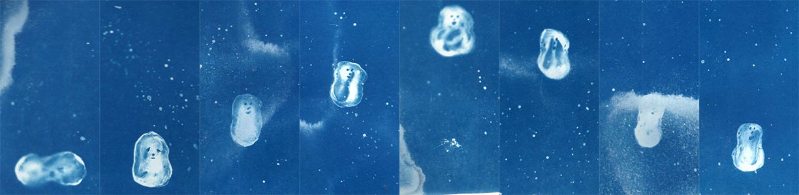
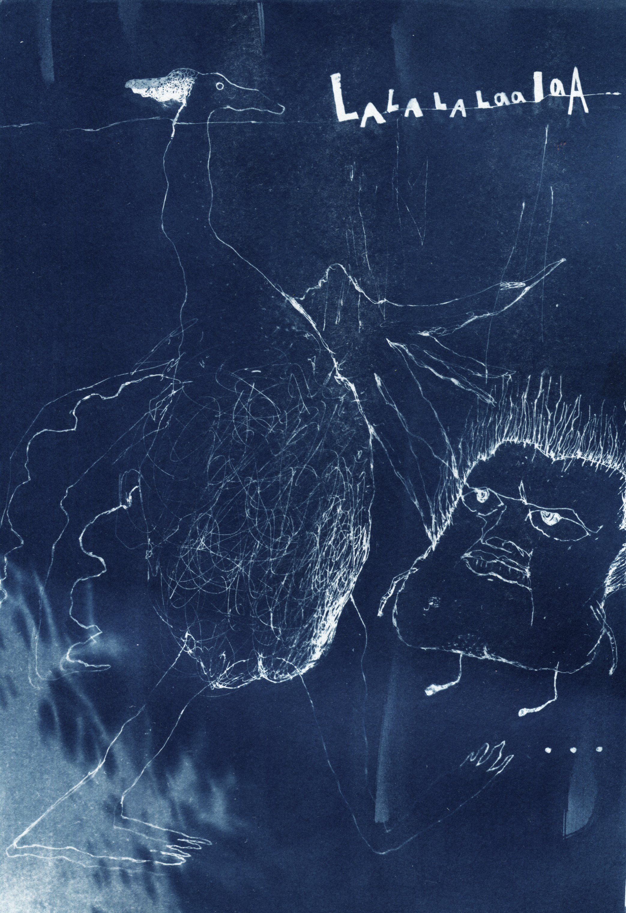

Notes on Artist Residency in TYPA Type and Paper Making Museum - 駐村筆記
魚蛋魚蛋魚蛋蛋
彈如彈如彈彈餘
- - - - - - - - - - - -
按壓與動彈之間的隨想
不知從何時開始，有感傳統印製技術跟動畫本質上理應是莫逆之交。
首先兩者製作速度同樣是無語倫比的緩慢 —-
印藝跟隨筆畫相比，少一份純粹，多一份思考；動畫同比實景真人電影，少了由現實直接抽取，多一點天馬行空，但每個場景都包含許多深思熟慮的細節，若以 analog 製作過程為根本，而且假若執著要以逐格創造，製作過程是…漫…長…的…醞…釀…
另外，兩者都是面向大眾的，富有傳播性意義，比較親民，容易被手指觸碰，無高高在上的擔子。他們同時極具有包容性，是溶合現實與潛意識的魔術。
矛盾位：
印刷多用”版”去複製(除了 Monoprint)， 是一門乘數的藝術；動畫則不重視每一框，重要是框同框之間的流動和變化，擠壓時間的門術。印刷掌管按壓和複製，動畫掌控時間和流動。因此，在考慮使用印藝技術於藝術動畫前，成本時間概念亦為重要考慮。採用技術的特點和概念有相扶相成嗎?
回顧一下，其實於藝術動畫史上運用印藝方式製作動畫上的亦不少：
- Rhinoceros (1965) Jan Lenica, mixed graphic art
- G-AAAH (2016) Lizzy Hobb, Type writing, concrete poetry
- A love Letter to the one I made up (2017) Rachel Gutgart, silkscreen, rotoscope 2D
- Drop by drop (2016) Laura Goncalves & Xa, drypoint & digital, 2D drawing
- Eyes and horns (2021) Chaerin I, cyanotype & 2D drawing
- Monotype loop (2015) Francesco Rosso, oil paint on glass, hand press, painting
- How many (2021) Bianca Scali, cyanotype & digital 2D
- Swift (2023) Ada Napiorkowski, photocopy & 2D3D mixed
- Fantasmia (2019) Luise Fiedler, woodcut aesthetic, scratch on paint-coated glass
- Papers (1991) Yoshinao Satoh, found print material
塔圖 TYPA 博默館駐留期間，我和 Heta 初試用 3 種技術做動畫。
（一）絲印動畫 Silkscreen Animation
在手繪動畫電影製作過程中有一個步驟叫 Clean Up，這個工序完成後，會交給下一位工作人員重繪線條。因此我就萌生了一個念頭：
How will silkscreen transform those shitty digital drawing lines?
答案：挺好的，還可以。


好處：顏色鮮豔亮麗，線條濕潤，假如用色少過 3 隻還可以。
缺點：製網、洗網需時，每框 Size 都很有限，但又不能太細，容易起點。
下次下次: 形狀、Negative space。
（二）藍曬動畫 Cyanotype Animation

cyanotype movement test made by Heta Jäälinojä
藍曬吸引之處:
- 便宜成本低
- 可以當作 photogram 地運用: 陰影、剪紙、畫畫、雕花也可以
- 精細線條又有模糊夢幻感
- 可以和陽光玩遊戲

Cyanotype 難受之處:
除了藍，還是藍，可以後期改動，不過也值得細想，什麼可以是藍的意義和有趣的對比？
下次下次：動動，玻璃，幼線，層次，模糊感，Gradient
（三）活字 Movable type & Surface Animation

想嘗試對話、共舞，將 movement 容入 movement，將獨特之處放大。想讓被選取的角色本身特質跟 concept、視點、情感緊扣。如何運合慢鏡亦是一個考驗。
Moving Type Animation Test : A Night Swim (Prelude)
很喜歡這個能夠將不同技巧運合的方法。能夠運合和突顯回憶碎片化的時代感。 比較接近 Julian Antonio 的玩法，印刷與 animating 同時進行。並非先畫線後填色的沈悶過程。
有待發掘和栽種：
- 如何做動畫時避免眼睛疲勞和屁股疲勞?
- 掃描器還是相機?
- Elements from Dance film, experimental fictions and poetic documentaries?
- 將重點放係 graphic art in communication 而非 printmaking?
- 容許自由地同 painting 或係攝影拼合? 嘗試 cut-out technique 混合 live action or slow motion or rotoscoping?
- 真的沒有必要為定格動畫而定格動畫，也可以考慮更多 frames per seconds.